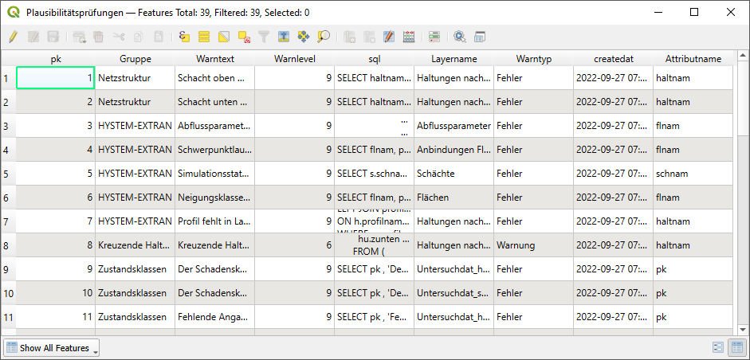
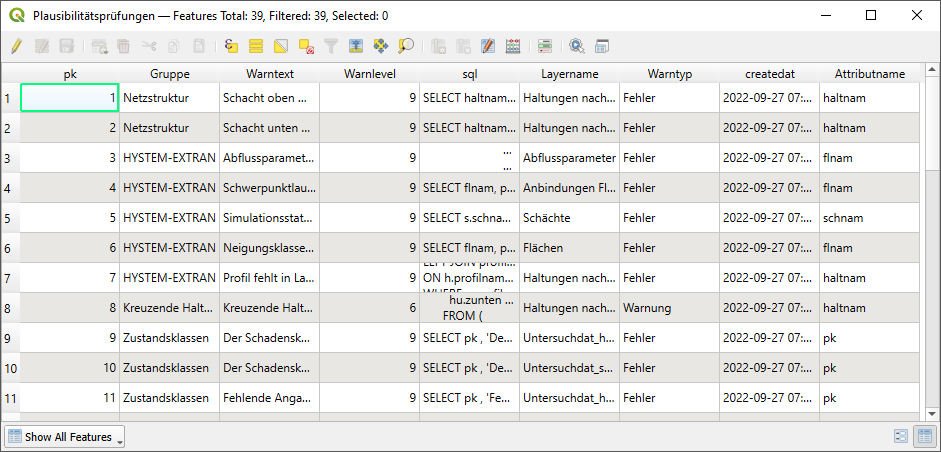

Daten
Plausibilitätsprüfung
Mit der Funktion Plausibilitätsprüfung können die verschiedenen Plausibilitätsprüfungen, welche unter der gleichnamigen Tabelle zu finden sind, bequem ausgeführt werden. Die zur Auswahl stehenden Themen entsprechen dabei den Gruppen aus der Tabelle „Plausibilitätsprüfungen. In dieser Tabelle sind die einzelnen Plausibilitätsprüfungen, mit Beschreibung sowie der genauen SQL-Abfrage, zu finden. Die SQL-Abfrage kann auch hier bearbeitet werden. Dies ist nur zu empfehlen, wenn ein umfangreicheres SQL-Verständnis vorliegt.
{kind=link}
 

Zur Durchführung können eine oder mehrere Themen ausgewählt werden und gleichzeitig durchgeführt werden. Durch die Option „Ergebnisse zu bestehenden hinzufügen“ wird die vorhandene Fehlerliste nicht überschrieben, sondern ergänzt. Nach Durchführung der Plausibilitätsprüfung öffnet sich die Tabelle „Fehlerliste“ automatisch. Hier werden die gefundenen Fehler aufgeführt. Bei einigen Abfragen ist die Anzeige auf max. 5 Einträge gleichartiger Fehlertypen begrenzt. In diesem Fall wird dies auch in dem Warntext erwähnt, sowie die genaue Anzahl des jeweiligen Fehlertypens.